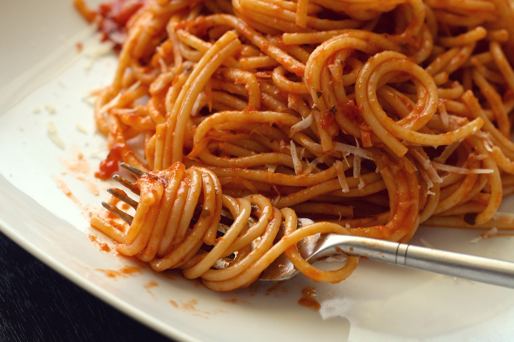

Home
Spaghetti Recipe
Required Ingredients (for one serving):
- Spaghetti Noodles
- 15 Garlic Cloves
- 4-5 Tomato
- 5 Small Green Chillies
- Red Chilli Powder & Salt
Cooking Instructions:
- Heat the Water to BOILING MONSTROCITY in any Kitchen Utensil and Throw in the Spaghetti Noodles with some salt as they are for 8-9 minutes.
- Peel your Garlic in the meantime, Wash your tomatoes and green chillies. Optionally Char the Garlic and Green Chillies Under Direct Flame
- Assuming the Spaghetti is Complete, Drain it and keep a few spoons of The Pasta Water with you.
- Grind the Tomatoes, Green Chillies, Garlic in a Mixer until very fine
- Put a pan to cook it, optionally you may add some oil beforehand, and then strain the mixture throughly to it and let it simmer and cook, move it using a wooden spoon (recommended for metal surfaces) Add Salt to taste and at least 2 tablespoon of red chilli. Throw in the spaghetti and pasta water and mix it using forks
- Serve Fresh! Enjoy the Spaghetti, Optionally Add chilli flakes on top!
